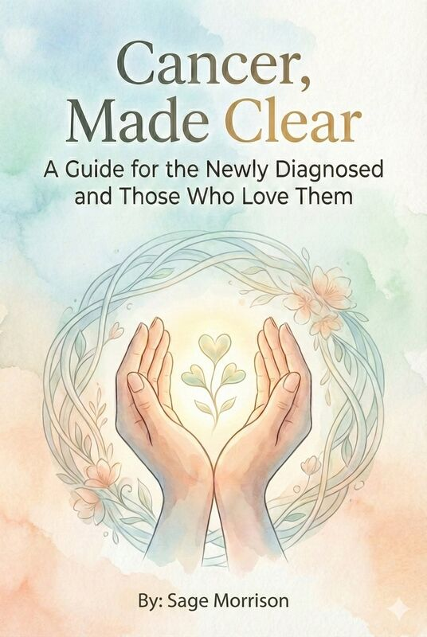

Cancer, Made Clear
A Guide for the Newly Diagnosed and Those Who Love Them. A compassionate resource offering clarity, hope, and practical guidance through the overwhelming journey of a cancer diagnosis.
Available on Amazon →Weaving tales of resilience, hope, and the transformative power of second chances through authentic voices and lived experience.

A Guide for the Newly Diagnosed and Those Who Love Them. A compassionate resource offering clarity, hope, and practical guidance through the overwhelming journey of a cancer diagnosis.
Available on Amazon →A Sea Ranch Cozy Mystery. Murder and intrigue unfold in the coastal beauty of Sea Ranch, where secrets from the past threaten the present in this charming mystery.
Available on Amazon →A powerful memoir exploring the journey of recovery and redemption, chronicling over two decades of transformation, healing, and finding hope in second chances.
Learn More →Sage Morrison writes from a place of hard-won wisdom and authentic experience. Her work bridges the raw honesty of personal memoir with the universal themes of redemption, resilience, and renewal that resonate across all human experience.
Drawing from over two decades of personal recovery journey and supporting others on their paths to healing, Sage's writing carries the weight of lived truth. Her prose doesn't shy away from the difficult moments, yet always illuminates the possibility of transformation.
Beyond writing, Sage is deeply committed to helping others find their own stories of hope and healing, working as a guide and mentor in recovery communities.
"Every story of recovery is a testament to the human spirit's infinite capacity for renewal."
For speaking engagements, book inquiries, or to share your own story of recovery, please reach out. Every message matters.